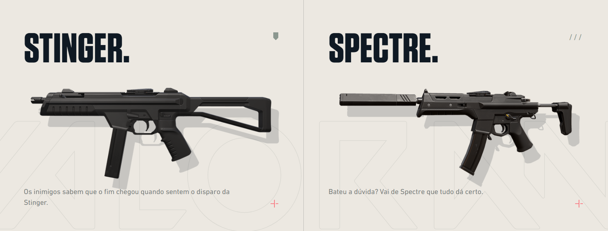
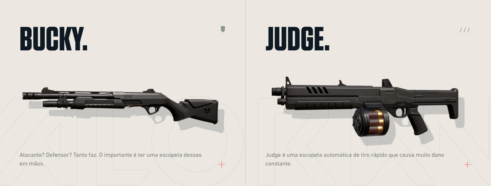
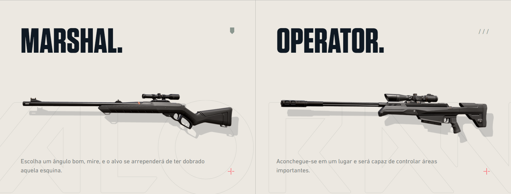
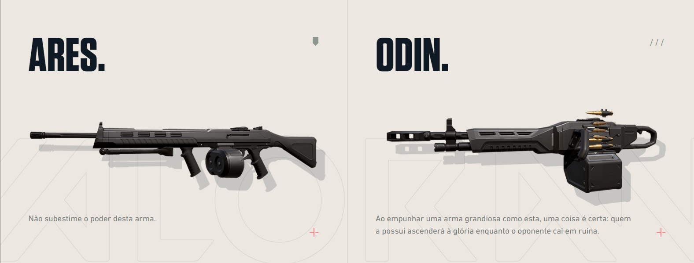

Classes de Armas
Armas Leves
São as armas mais básicas do Valorant. Baratas, leves e sem muito poder de fogo, são utilizadas apenas como forma de complemento aos rifles (ou quando a grana está escassa). No entanto, podem ser úteis. São armas leves: Classic, Shorty, Frenzy, Ghost e Sheriff.


Submetralhadoras
São armas intermediárias. Seu poder de fogo não é tão alto quanto um rifle, porém não é tão baixo quanto uma pistola. Costumam ser usadas em situações de meia-compra. São submetralhadoras: Stinger, Spectre.
Escopetas
São conhecidas pelo dano altíssimo a curta distância. Elas precisam ser recarregadas a todo momento e não costumam ser tão versáteis. Só se encaixam em situações bem específicas do jogo. São escopetas: Bucky, Judge.
Fuzis
São as melhores armas do Valorant. Quando se tem dinheiro para realizar um full armado, é com esse tipo de armamento que você quer se equipar. Funcionam bem em todas as distâncias, possuem dano altíssimo e cartucho recheado de balas. São fuzis: Bulldog, Guardian, Phantom, Vandal.


Fuzis de Precisão
Conhecidas como Snipers, esse tipo de armamento é indicado aos jogadores que gostam de pescar adversários de longe. Com eles, é possível eliminar um inimigo com apenas um tiro! São snipers: Marshal, Operator.
Metralhadoras
As armas pesadas possuem muita munição e funcionam bem em distâncias curtas ou médias, mas deixam o operador extremamente lento. São pouco utilizadas no meta atual. Portanto, é melhor gastar o dinheiro com outras opções. São metralhadoras: Ares, Odin.
